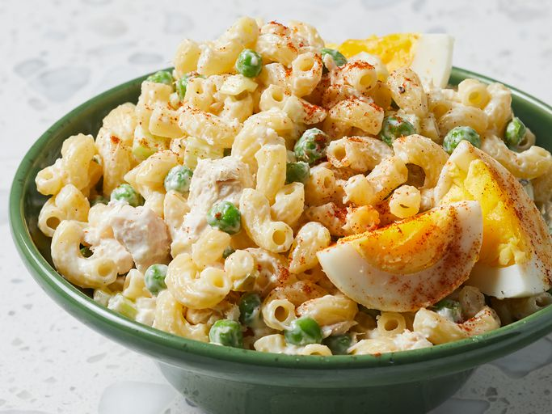

Tuna Macaroni Salad Recipe
Home

Description
This tuna macaroni salad is easy to make with cooked pasta, celery, peas, relish, and mayonnaise.
It will remind you of Grandma's! Enjoy this basic comfort food when the weather is warm.
Ingredients
- 1 (12 ounce) package elbow macaroni
- 1 (10 ounce) can baby peas, drained
- 2 stalks celery, chopped
Steps
- Gather all ingredients.